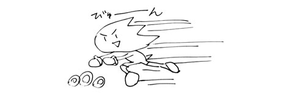

『SWAをおさらいしましょう☆』
2009年01月26日
こんにちは、マツバラです！
今日はヨシノがおやすみなので、
マツバラ１人でお送りします。
あ、今回は生牡蠣じゃないですよ。
あの健康優良児が体調を崩すとかありえません。
ちゃんとしたおやすみです！
（生牡蠣…美味しかったなあ…）
（元気な時にまた食べよう…）
……
実は今日こそ、
橋本ディレクターの机を漁…いえ、リポートしようと
思ったんですが
ガードが固くて！
何か最近、警戒されてる気がします。
こんなカワイイ社員に
何を警戒することがあるのかしら！
……
さて、今日は『SWA』をさらっとおさらいしましょうか！
『ソニック ワールドアドベンチャー』は
超音速＆パワフルアクションアドベンチャーです！
ご存知青いハリネズミ、
「ソニック・ザ・ヘッジホッグ」が
世界中を超スピードで走ります！
しかもそれだけじゃなくて……
な、な、なんと！
夜は「ウェアホッグ」に大変身しちゃいます！！
変身した「ソニック・ザ・ウェアホッグ」は
昼の超音速アクションとは打って変わって、
超強力なパワフルさを身に付けています。
まさに昼ハシル、夜ナグル！！
そしてそして、
ソニックだけじゃありませんよ。
超美麗なステージのグラフィックも必見です！
公式サイトにスクリーンショットが
たっくさん掲載されているので、
その綺麗さをぜひご確認ください♪
「ソニックワールドアドベンチャー」で、
爽快感あふれるカッコイイ音楽をバックに、
昼は超スピード、夜は超パワフルで
世界を駆け巡っちゃってください☆
wii版は絶賛発売中です。
XBOX360版、PS3版は２月１９日発売です！！
みなさん、ぜひぜひ新しいソニックを
堪能してください！！
……うーん
どういうゲームかを簡単に
説明するとですね
昼ハシル！

夜ナグル！
です！
わー、わかりやす～い！
……
（…なんか寂しいなあ…）
（ヨシノ早く来ないかなー）
日時: 2009年01月26日 20:00 | パーマリンク


 ソニックを愛する、元気な『SWA』2年目プランナー。
ソニックを愛する、元気な『SWA』2年目プランナー。 マイペースな『SWA』2年目プランナー。
マイペースな『SWA』2年目プランナー。
 ご意見・ご要望はこちら
ご意見・ご要望はこちら RSS
RSS